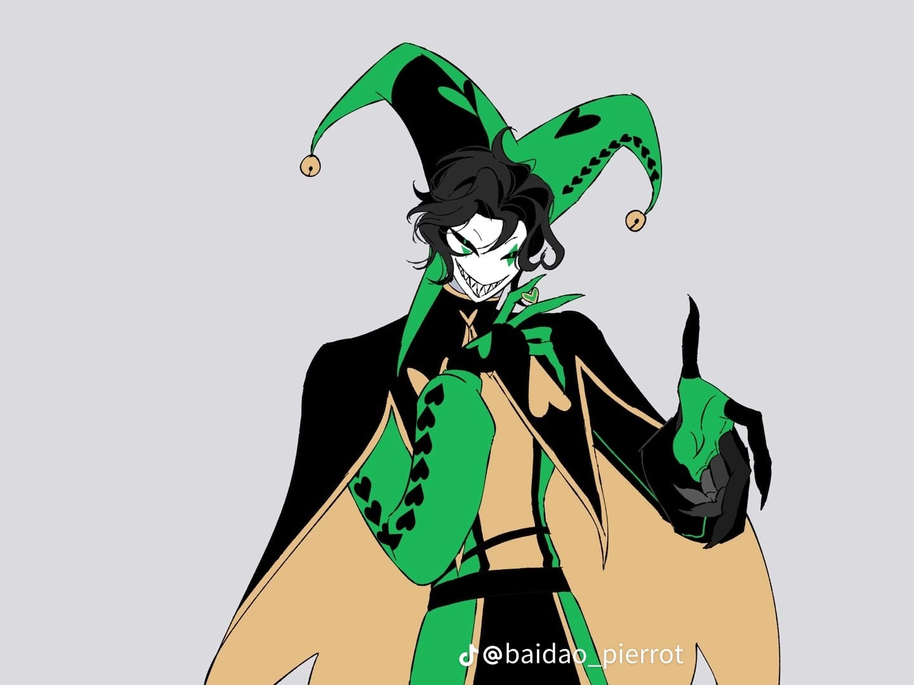

Harlequin
Harlequin es el principal rival de Pierrot, a diferencia de la melancolía de Pierrot, Harlequin se presenta como una figura seductora, teatral y depredadora.
Apariencia física:
- Rasgos distintivos:
Se le describe como un hombre de aspecto juvenil pero siniestro, a menudo con ojos verdes intensos y colmillos que refuerzan su naturaleza no del todo humana.
- Vestimenta:
A diferencia de los "bufones" o "fulls" del circo que visten de rosa, el verdadero Harlequin mantiene un estética más única y oscura, alineada con el concepto clásico de arlequín pero adaptada al género de horror.
- Expresión:
Suele mostrar una sonrisa burlona o maníaca, reflejando su personalidad juguetona pero peligrosa.
Rasgos de Personalidad:
- Obsesivo y Manipulador:
Es conocido por desarrollar una obsesión con el protagonista, alternando entre un comportamiento encantador y uno posesivo o aterrador.
- Dualidad:
Combina la agilidad y las habilidades acrobáticas típicas de un arlequín con un trasfondo oscuro de "freak show", donde la línea entre el artista y el monstruo es borrosa.
Volver a la página inicial